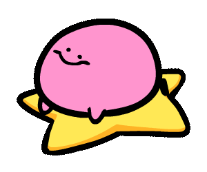

Esta es una pagina web donde pondre distintas cosas que me llamen la atencion
Pues se podria decir que por falta de creactividad o talvez por simplemente no saber de que hacer la paguina web pues decidi hacerla
acerca de cosas que me rodean o que me llamen la atencion -Florencio Peralta
Pues tal como la cita anterior lo acaba de explicar, el AUTOR de este sitio web se dedicara netamente a Publicar Cosas,
pero antes de que piencen que voy a publicar cosas sin sentido y aleatorias dedo hacer que queden claro algunas cosas
¿Qué es un blog personal?
La definición de blog personal puede resultar simple y a la vez compleja. Se podría decir que un blog personal es una especie de diario digital en la que vas contando y compartiendo tus experiencias de vida.El contenido que se escribe tiene que ver con los intereses de su autor, en algunos casos está asociado con algún hobby y en otros con un tema de trabajo.
¿Por que escogí como tema un blog personal?
Ademas de la razon ya antes expuesta al principio de la pag exiten 2 razones más por cual escogí hacer esto:
